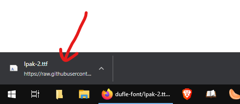
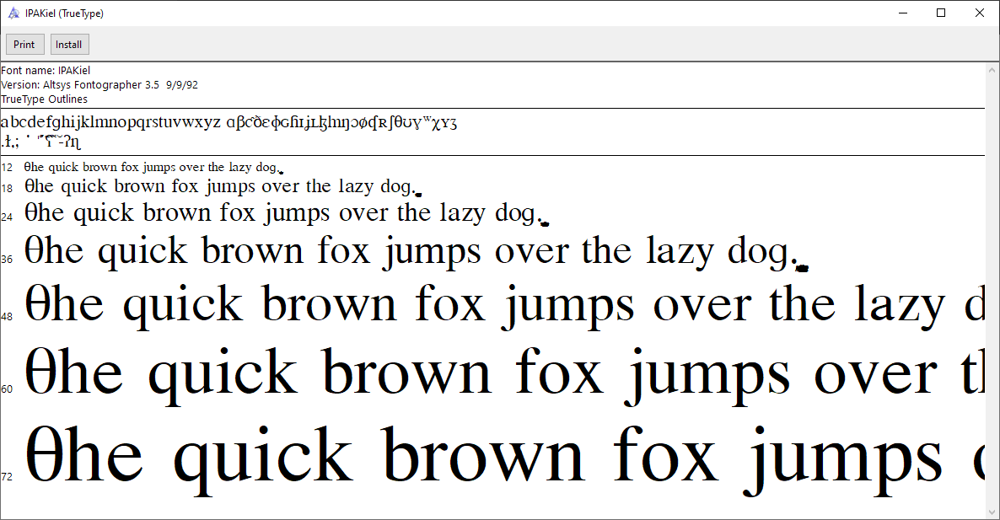
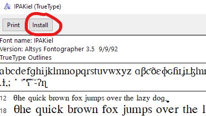

- Download the font by clicking here.
- Once the font is downloaded, open the downloaded file by clicking on the button in the bottom-left corner of the screen:
downloaded file
- When you open the file, you will see a window like the following:
font installer main window
- Click on the "Install" button on the top left:
font installer zoomed
That's all folks!